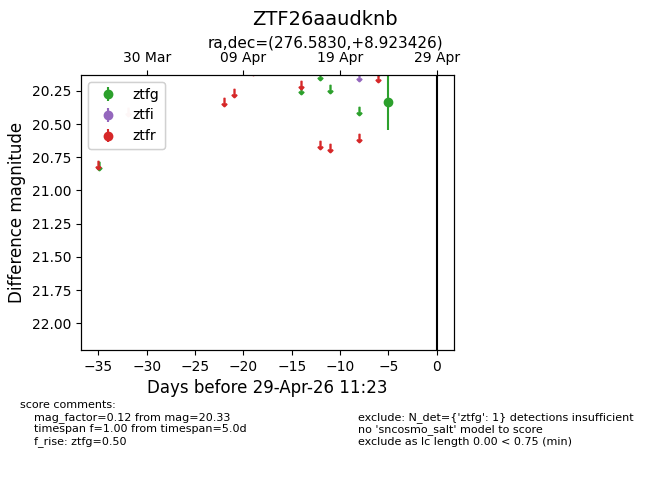
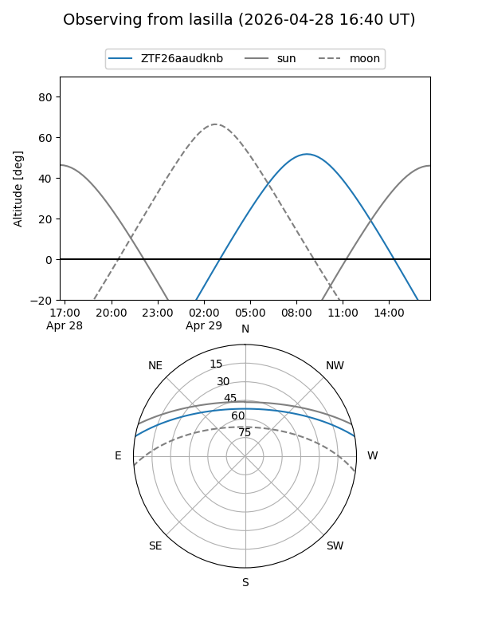
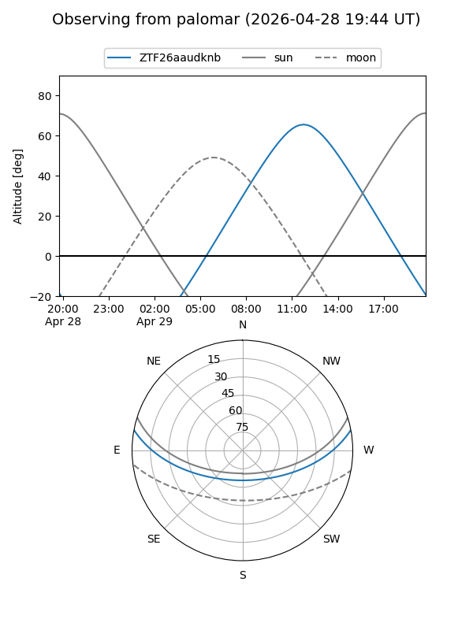
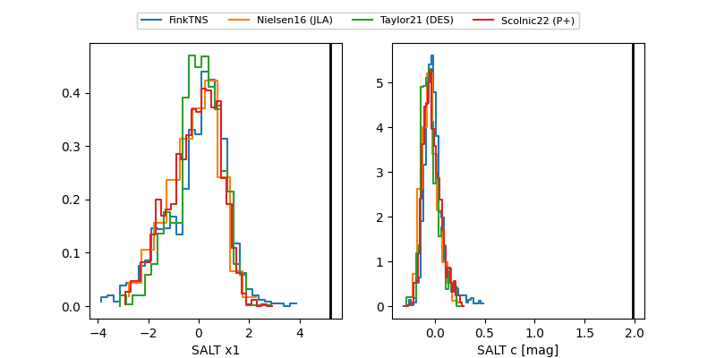

ZTF26aaudknb
Target ZTF26aaudknb at 2026-04-29 11:26
Aliases and brokers:
FINK: link
Lasair: link
ALeRCE: link
alt names
ZTF26aaudknb (ztf,fink_ztf)
Coordinates:
equatorial (ra, dec) = 276.5830,+8.92343
equatorial (HMS+DMS) = 18:26:19.93,+08:55:24.34
galactic (l, b) = (38.0993,+9.60474)
Flags:
Photometry:
last ztfg=20.33
1 ztfg detections
Lightcurve

Visibility


Additional plots
